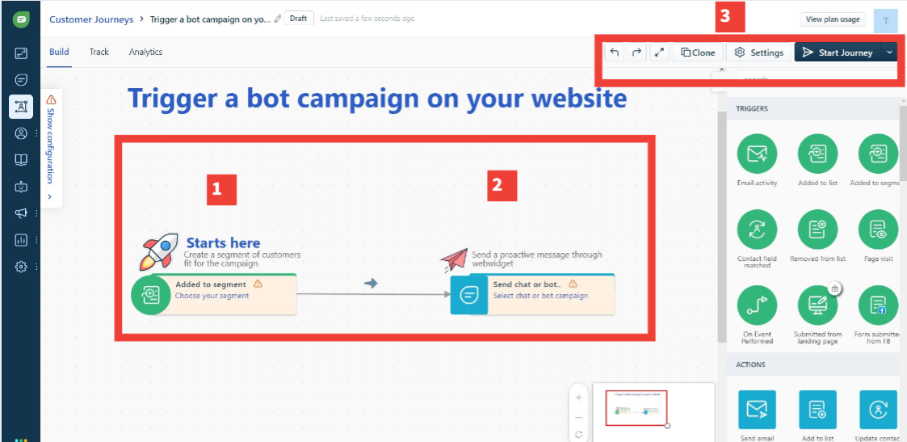
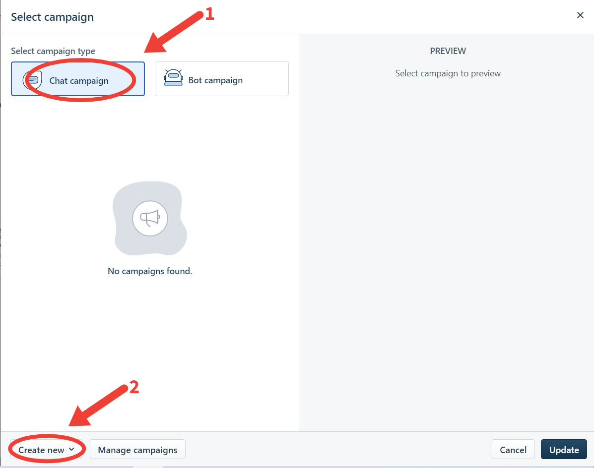
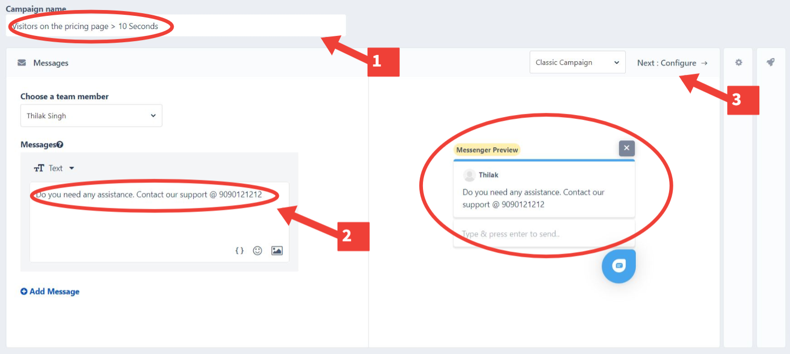
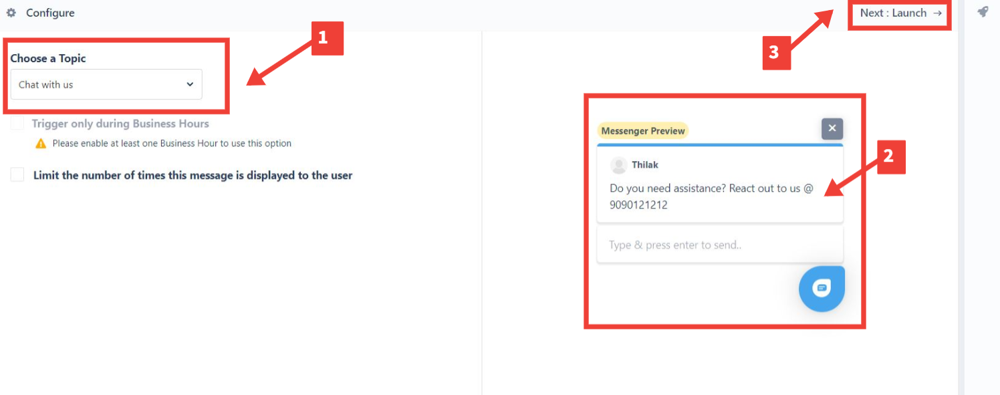
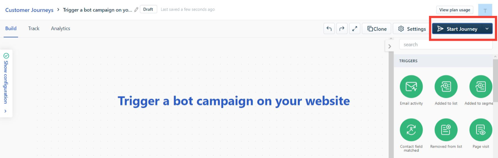

Enabling Pre-Defined Customer Journeys and Using Them
To understand customer journeys well, let's enable the 'Trigger a bot campaign on your website' customer journey and configure it such that:
- It gets the visitors' email addresses and turns them into CRM contacts.
- Then nudges them with a proactive message to take some action, like getting in touch with your support.
- Navigate to the 'Trigger a bot campaign on your website customer journey' card.
- Click the 'Enable Journey' button. The customer journey configuration page opens up. 
- The customer journey template has 3 steps: i) Selecting a segment of customers as the campaign's target, ii) Configuring the proactive message to be sent to the customers, and iii) Starting/Launching the Customer Journey.
- I. Selecting a segment of customers as the campaign's target
- Click the 'Choose your segment' link. This opens up a pop-up box.
- Select the Contact Segment you wish to be the campaign's target. (Read Contact Segments to know more about how Contact Segments can be created).
- You have the option of including contacts already existing in the segment chosen to be part of the campaign. You can also choose to exclude them and include only the incoming contacts as a part of the campaign.
- Click Save to add the selected Contact Segment.
- II. Configuring the proactive message to be sent to the customers
- Click the Select bot or chat campaign' link. This opens up the select campaign pane. 
- Click Create New --> Select Chat Campaign. This opens up the campaign details page. (You can try out the Bot campaign on your own later). 
- Give a name for the campaign like 'Visitors on the pricing page > 10 Seconds'.
- Select a support member who will be involved in the campaign. By default, it will be assigned to you. But you can assign it to someone else too.
- Configure a proactive message for your visitors like 'Do you need assistance. Contact our support @ 9090121212.' You can preview the message on the right pane. (You also have the option of adding multiple messages by clicking on the 'Add Message' button).
- Click the 'Next:Configure -->' link to move to the next page.
- You will be led to the campaign configuration page. 
- Select the Topic the campaign is going to be associated with. (Read Topics to know more).
- You also have the option of limiting the number of times the configured message is going to be displayed. To do this, check the 'Limit the number of times this message is displayed to the user' checkbox and enter the maximum number of times the message can be displayed to the user. You can configure this limitation per session or across all sessions.
- Preview the message one last time on the right pane to check everything is ok.
- Click the 'Next:Launch -->' link to move to the next page.
- III. Launching the Customer Journey
- Click the 'Launch' button to launch the campaign.
- You will be taken back to the Customer Journey configuration page. This is because you just configured a customer journey, but are yet to launch or kick off the journey.
- To launch your Customer Journey, click the Start Journey button at the top right corner. 
- The Customer Journey will be launched successfully.
Note: It is recommended you build your first customer journey with the basic flow available. Later you can turn it into a full-blown campaign (using triggers, actions, controls, etc., that are available in the right pane) once you understand customer journeys well.


Note: You will also have the option of scheduling Customer Journeys and running them at a later date and time. Also, remember that you should have configured the FreshChat welcome chatbot somewhere in your website or web app to receive the visitor's email id so that it can be added as a part of the campaign.'
You can also watch how to configure Customer Journeys video demo to understand it better.
Related Articles
Dummy Article
Dummy Article
Dummy Article
Dummy Article